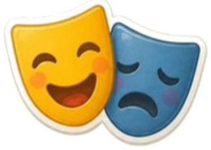

🔐 3번 방 · 생활 속 불편함 해결하기11차시 / 10~14도입

물건 교과서 · 방 탈출 미션
3번 방 · 11차시
불편함
수사대
내 물건에 숨은 불편함 단서를 찾아라!
지난 미션 돌아보기
10차시 비밀 문장, 기억나요?
발명은 생활 속 불편함을 찾는 데서
시작돼요.
시작돼요.
🕵️ 준비! 필통과 책가방을 책상 위에 꺼내 놓아요.
숙제로 떠올린 불편했던 순간은 무엇이었나요?
숙제로 떠올린 불편했던 순간은 무엇이었나요?

MISSION BRIEFING
오늘의 미션 세 가지
미션 1
30초 수사
내 물건을 샅샅이!
미션 2
단서 분류 본부
어떤 불편함일까?
미션 3

불편함 연극
모둠이 장면으로 보여 줘요
보상
열쇠 조각 2
3번 방 두 번째!
🎯 학습 목표 매일 쓰는 물건을 살펴보며 불편했던 점을 찾고, 어떤 종류의 불편함인지 말할 수 있어요.
MISSION 1
🔍 30초 수사
1
화면에 나온 물건을 내 것으로 꺼내요. (필통, 가방, 책상 …)
2
⏱️ 30초 동안 열고, 닫고, 들고, 넣어 보며 불편한 점을 찾아요.
3
찾았으면 조용히 손을 들어요. 선생님이 부르면 “○○할 때 △△해서 불편해요”로 말해요.
4
찾은 단서는 칠판에 모아 두어요. 다음 미션에서 써요!
NEXT MISSION
12차시 예고
발명의
발명의
세 가지 마법
더하기 · 빼기 · 바꾸기로 불편함을 해결해요.
🕵️ 오늘 쓴 불편함 수사 노트를 꼭 가져와요!
📒 불편함 수사 노트